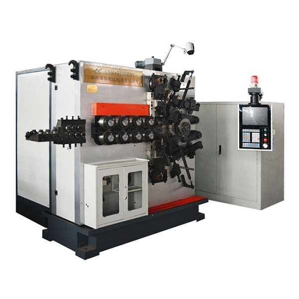
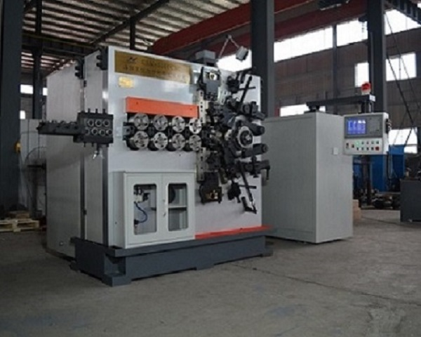

Key Factors Affecting Quality During Spring Grinding
2020-02-03 11:12:31
- TAG :
There are many places to pay attention to when producing springs. Any detail will affect the quality of the spring. After all, the details determine the success or failure. When springs need to be ground after they are produced, we cannot relax our vigilance and start with the following points and grasp the details to produce a good spring.
(1) The grinding wheel should be selected reasonably
Grinding wheel is coarse, the roughness of the grinding surface is coarse, and the production details of the grinding wheel particle are low. If the grinding wheel is too hard, the grinding surface will be burnt and the verticality is not good. There will be two grinding surfaces. The grinding wheel is soft, the sand particles fall off quickly, the life of the grinding wheel is short, and the perpendicularity and the parallelism of the end face are not good.
(2) Control of helix rise angle
When grinding the end face of a spring with a double-end grinding machine, in order to ensure the verticality of the spring, the size of the spring's rising angle is very important. When the size of the spiral lift angle is not consistent, the degree of grinding surface grinding, the thickness of the tip, and the verticality are greatly dispersed.

(3) A dedicated measuring tool is required during grinding
In order to ensure the quality of grinding, a certain number of special measuring tools should be equipped to ensure that workers can quickly and accurately measure the quality of the grinding spring in the self-test.
(4) Dressing of the grinding wheel
The dressing of the grinding wheel has different shapes, and the verticality after grinding is also different. If the grinding wheel disk is concave, the verticality of the grinding spring is good, but the grinding wheel is easy to wear and not used for a long time. The dresser can swing at an angle to make a concave wheel. If it is a parallel grinding wheel, this is the ideal state. This kind of grinding wheel has a long service life, few dressing times, and good verticality of grinding. If it is a convex-shaped grinding wheel, that is, the middle protrusion after the grinding wheel is trimmed. The verticality of the spring is not good, which is usually caused by the wear of the guide of the dresser. When the dresser is trimmed, it is necessary to repair the dresser in time. Fine grinding.
(5) Selection of grinding sleeve diameter and length
Grinding a spring with high verticality requires a clearance of 0.05-0.5mm between the spring and the sleeve, and a uniform clearance between the spring and the upper and lower grinding wheels.

(6) Grinding of the dresser guide rail
After the seal of the dresser guide rail is damaged, the sand will enter the dresser guide rail, causing wear of the guide rail. If the machine is used for a long time, the dresser guide rails will be worn. At this time, the dresser guide rails and sealing devices should be repaired in time, otherwise the knife phenomenon will occur, and the grinding wheel will have a convex shape after trimming, and the spring verticality is difficult to be polished.
(7) Prevent gaps during spring grinding
When the spring is ground, the gap is easy to produce a gap. The gap affects the verticality, load characteristics and free height of the spring. Therefore, the general grinding process of the spring is performed after the stress is tempered and tempered. Springs wound with annealed materials will have end gaps when they are coarsely ground. Springs rolled with cold drawn materials have a layer of residual compressive stress on the surface of the steel wire. After rough grinding, the balance of residual stress will cause end gaps. Springs made of annealed material produce gaps during rough grinding. A stress-relief tempering process can be added before rough grinding to eliminate residual cold drawing stress and solve the problem of end gaps.